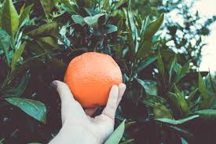
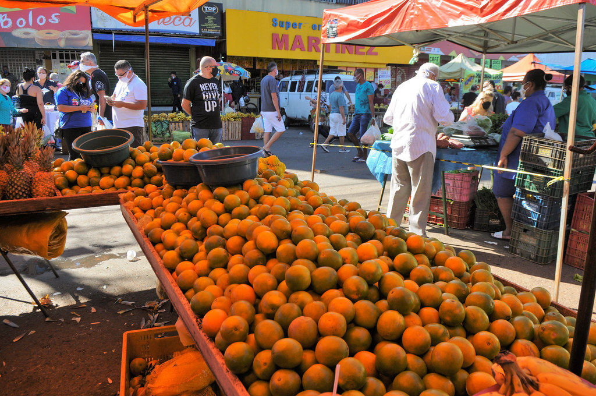
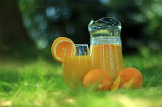

As laranjas são colhidas manualmente por trabalhadores que as cortam ou arrancam das árvores.
Após a colheita, as laranjas são colocadas em caixas ou sacos e transportadas para uma unidade de processamento.


Na chegada à unidade de processamento, as laranjas são descarregadas e inspecionadas para garantir que estão em boas condições. As laranjas são lavadas para remover sujeira, pesticidas e outros contaminantes.
As laranjas são embaladas em caixas, sacos de malha ou outros recipientes apropriados para transporte e armazenamento.
As laranjas são transportadas para os pontos de venda em caminhões refrigerados para evitar deterioração.
As laranjas são distribuídas para supermercados, mercearias, mercados locais e outros pontos de venda.
As laranjas são classificadas por tamanho, cor e qualidade. Frutas de baixa qualidade são descartadas ou usadas para outros fins, como a produção de suco.
